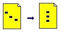
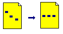

Aligning Regions |
You can align regions using alignment buttons, menu commands, the Worksheet Ruler, or by nudging with arrow keys.
| Aligning Regions Vertically |

To align two or more selected regions on their left borders:
Select the regions you want to align.
Choose Align Regions > Down from the Format menu,
Or click on the Align Down button on the Main toolbar.
You can also align regions vertically using guidelines set in the Ruler under the View menu. The ruler makes it easier to vertically align regions down multiple pages.
| Aligning Regions Horizontally |

To align two or more selected regions along a horizontal line mid-way between the highest and lowest region:
Select the regions you want to align.
Choose Align Regions > Across from the Format menu,
Or click on the Align Across button on the Main toolbar.
| Nudging Regions |
Select the regions you want to align.
If you want to nudge a single region, hold down the [Ctrl] key and then click.
| Manipulating Overlapped Regions |
To move one region in front of another, right-click on the region and select Bring to Front from the menu.
To move one region behind another, right-click on the region and select Send to Back from the menu.
If you don't want regions to overlap at all choose Separate Regions from the Format menu, or select one or more regions and drag away from the others.